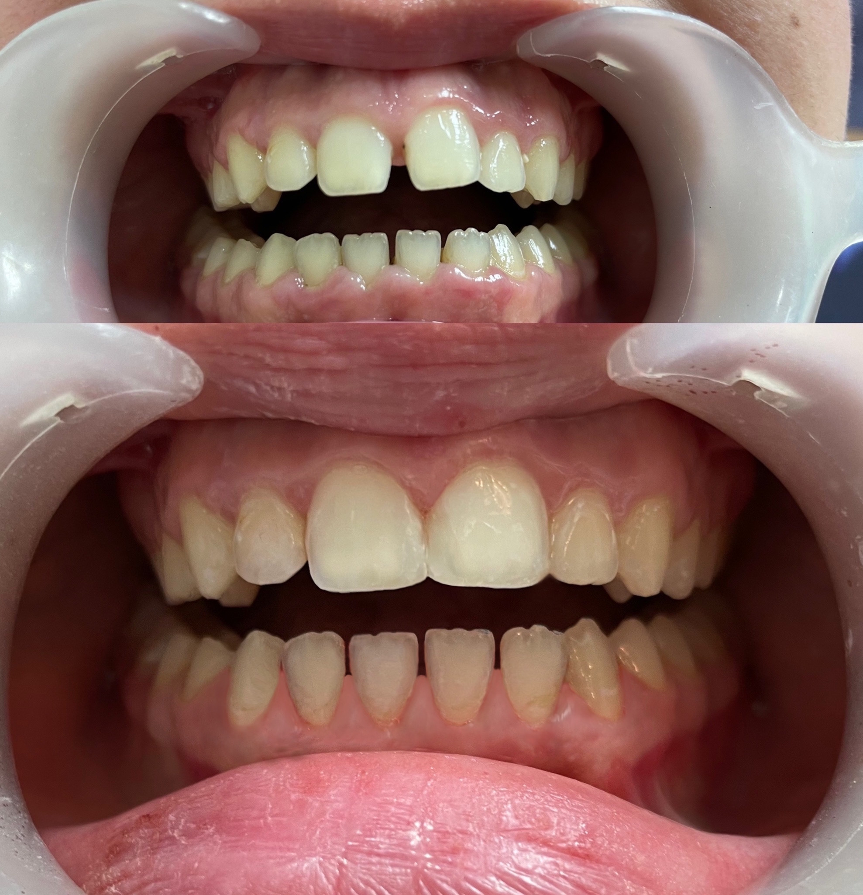
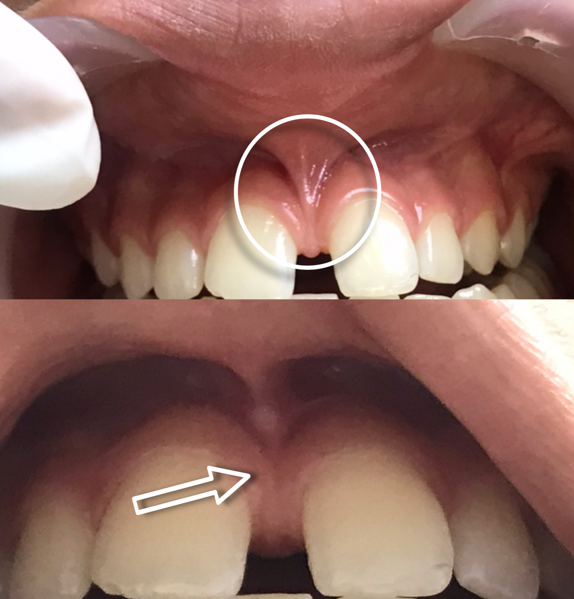
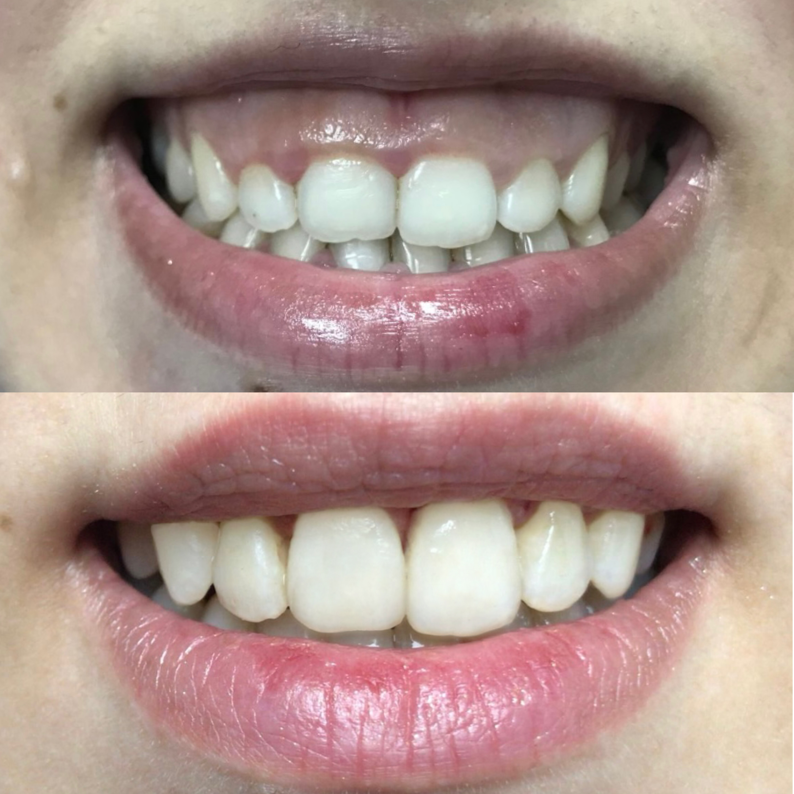
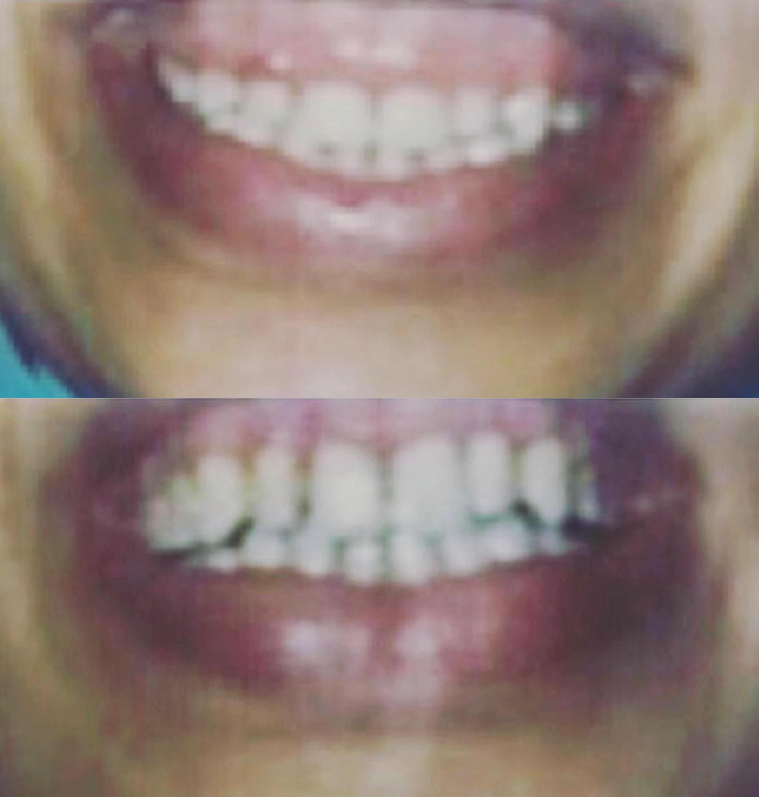
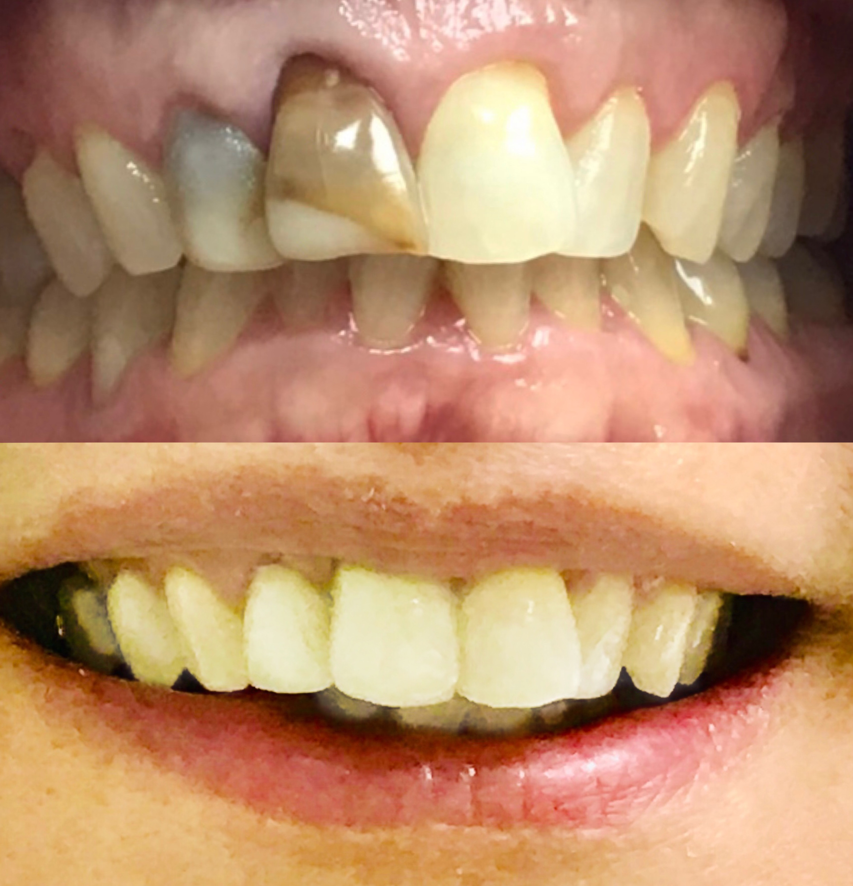

Soins Dentaires Courants à Rabat — Caries, Détartrage, Urgences
Une douleur, un abcès, une dent cassée ou simplement un contrôle en retard ? Nous prenons en charge l'ensemble des soins courants, avec radiographie sur place et des créneaux d'urgence le jour même dans la mesure du possible.
- Urgences le jour même
- Radiographies sur place
- Sédation consciente
- Soins pour enfants
Quels sont les soins dentaires courants ?
Les soins dentaires courants constituent le socle de la santé bucco-dentaire. Ils regroupent le détartrage, le traitement des caries, les dévitalisations (traitements de canal), la prise en charge des abcès et infections, les extractions et les urgences dentaires. Réalisés à temps, ces soins évitent la grande majorité des traitements lourds et coûteux.
Le détartrage élimine la plaque calcifiée que le brossage ne peut plus déloger. Sans lui, le tartre s'accumule sous la gencive, provoque une inflammation (gingivite) qui peut évoluer vers une parodontite — la principale cause de perte de dents chez l'adulte, souvent bien avant les caries. Un détartrage une à deux fois par an est la mesure de prévention la plus efficace qui existe.
La carie est une destruction progressive de la dent par les acides produits par les bactéries. Traitée tôt, elle se soigne en une séance courte : la partie abîmée est retirée et remplacée par un composite de la couleur de la dent. Laissée évoluer, elle atteint le nerf et impose alors une dévitalisation, voire une couronne. C'est toute la différence entre un soin simple et un traitement long — d'où l'intérêt des contrôles réguliers, une carie débutante étant totalement indolore.
La dévitalisation, ou traitement de canal, consiste à retirer le nerf infecté ou nécrosé, à désinfecter les canaux de la racine puis à les obturer hermétiquement. Contrairement à sa réputation, cette intervention est réalisée sous anesthésie et n'est pas douloureuse : elle met au contraire fin à la douleur, souvent intense, qui a amené le patient à consulter.
Les urgences dentaires — abcès, rage de dent, dent fracturée, couronne descellée, traumatisme — sont prises en charge dans la mesure du possible le jour même. Un abcès en particulier ne doit jamais attendre : l'infection peut s'étendre aux tissus voisins. Le réflexe le plus efficace est d'appeler directement le cabinet plutôt que de réserver en ligne, afin que nous puissions évaluer l'urgence et vous intercaler.
Nous disposons de la radiographie numérique sur place, à faible dose d'irradiation. Le diagnostic est donc immédiat, sans avoir à vous envoyer ailleurs puis à reprendre un rendez-vous. Les enfants sont également reçus au cabinet, avec une approche adaptée à leur âge.
Les soins que nous réalisons
- Détartrage et polissage pour prévenir gingivites et parodontite
- Traitement des caries avec composite de la teinte de la dent
- Dévitalisations (traitements de canal) sous anesthésie
- Abcès et infections pris en charge rapidement
- Extractions, y compris dents de sagesse
- Radiographies numériques réalisées sur place
- Urgences dentaires reçues le jour même dans la mesure du possible
- Pédodontie : soins adaptés aux enfants
Comment ça se passe ?
-
Prise de rendez-vous
En ligne 24h/24, ou par téléphone au 06 11 38 11 11. Pour une urgence, appelez directement : nous évaluons et intercalons.
-
Consultation & diagnostic (200 Dhs)
Examen clinique et radiographies numériques sur place. Le diagnostic est posé immédiatement.
-
Devis et explication
Nous vous expliquons ce qui est nécessaire, ce qui peut attendre, et le tarif correspondant. Devis remis le jour même.
-
Réalisation du soin
Sous anesthésie locale si nécessaire. Beaucoup de soins courants se règlent en une seule séance.
-
Contrôle et prévention
Un bilan annuel et un détartrage régulier évitent la plupart des traitements lourds.
Tarifs
Tarifs soins dentaires à Rabat
La consultation est le point d'entrée : le tarif du soin dépend ensuite de la prestation réalisée.
-
Le plus demandé
1ère consultation
200 Dhs
examen et diagnostic
Examen clinique, radiographies si nécessaire, et devis remis le jour même.
-
Détartrage
Sur devis
séance de prévention
Élimination du tartre et polissage. Recommandé une à deux fois par an.
-
Soin de carie
Sur devis
selon l'étendue
Nettoyage de la carie et obturation en composite de la teinte de votre dent.
-
Dévitalisation
Sur devis
selon le nombre de canaux
Traitement de canal sous anesthésie. Le tarif varie selon la dent concernée.
-
Extraction
Sur devis
simple ou chirurgicale
Y compris dents de sagesse. Évalué après radiographie.
-
Urgence dentaire
Sur devis
prise en charge rapide
Abcès, douleur intense, dent cassée. Appelez directement le cabinet.
Tarifs indicatifs, susceptibles d'évoluer à la hausse comme à la baisse selon la complexité de votre cas. La consultation coûte 200 Dhs et votre devis personnalisé y est établi et remis. Des facilités de paiement sont possibles.
Nos Avant-Après
Résultats avant / après
Quelques résultats obtenus au cabinet du Dr Khamlich.






FAQ
Questions fréquentes
-
La séance dure généralement 20 à 30 minutes. Le tartre est éliminé à l'aide d'un instrument à ultrasons couplé à un jet d'eau, au-dessus et légèrement sous la gencive. Les dents sont ensuite polies pour lisser la surface et retarder la réaccumulation de plaque. Ce n'est pas douloureux, même si des sensibilités passagères sont possibles quand les gencives sont enflammées ou que le tartre est ancien. Si vos gencives saignent pendant le détartrage, c'est justement le signe qu'il était nécessaire.
-
Non. Le soin est réalisé sous anesthésie locale, vous ne ressentez donc rien pendant l'intervention. Pour une carie très superficielle, l'anesthésie n'est parfois même pas nécessaire. Une sensibilité au froid peut persister quelques jours après le soin, particulièrement si la carie était profonde et proche du nerf : elle disparaît spontanément. C'est en réalité la carie non traitée qui fait mal, pas le soin.
-
Oui, dans la mesure du possible pendant les heures d'ouverture. Douleur intense, abcès, dent cassée, traumatisme ou couronne descellée : appelez directement le cabinet au 06 11 38 11 11 en décrivant votre situation. Cela nous permet d'évaluer le degré d'urgence et de vous intercaler entre deux rendez-vous. Passer par l'appel plutôt que par la réservation en ligne est nettement plus efficace dans ce cas.
-
Une fois par an pour un adulte sans problème particulier, avec un détartrage à cette occasion. Deux fois par an si vous êtes fumeur, diabétique, sujet aux caries, porteur d'un appareil orthodontique, ou si vous avez des antécédents de maladie des gencives. Pour les enfants, un contrôle annuel dès l'apparition des premières dents définitives est recommandé. Ces contrôles permettent de détecter les caries alors qu'elles sont encore indolores et se traitent en une séance.
-
Oui, nous disposons de la radiographie numérique au cabinet, à faible dose d'irradiation. Radiographies rétro-alvéolaires pour une dent précise, ou panoramique pour une vue d'ensemble des mâchoires. L'image est disponible immédiatement à l'écran : le diagnostic est posé pendant votre rendez-vous, sans avoir à vous envoyer dans un centre d'imagerie et à reprendre un second rendez-vous.
-
Contrairement à sa réputation, non. Le traitement de canal est réalisé sous anesthésie locale : vous ne sentez rien pendant la séance. Il met justement fin à la douleur, souvent violente, provoquée par l'inflammation du nerf qui vous a amené à consulter. Une sensibilité à la pression est possible quelques jours après, le temps que les tissus autour de la racine se calment, et se contrôle très bien avec un antalgique simple.
-
Pas systématiquement. Si elles sont bien positionnées, correctement sorties et nettoyables, elles peuvent être conservées sans problème. L'extraction s'impose en revanche lorsqu'elles sont incluses, mal orientées, à l'origine d'infections répétées (péricoronarites), lorsqu'elles carient la dent voisine, ou lorsqu'elles compromettent un traitement orthodontique. Une radiographie panoramique permet de trancher clairement dans votre cas.
-
Consultez sans attendre : un abcès est une infection active qui peut s'étendre aux tissus voisins, et il ne disparaîtra pas de lui-même. Appelez le cabinet le jour même. En attendant votre rendez-vous, évitez d'appliquer de la chaleur sur la joue, ce qui aggrave le gonflement. Ne prenez pas d'antibiotiques laissés d'un ancien traitement : ils masquent les symptômes sans traiter la cause, et compliquent la prise en charge. Le traitement consiste à drainer l'infection et à traiter la dent à l'origine du problème.
-
Oui, nous pratiquons la pédodontie. L'approche est adaptée à l'âge : nous prenons le temps de mettre l'enfant en confiance et d'expliquer chaque geste avant de le réaliser. Les soins des dents de lait ont toute leur importance — une carie non traitée sur une dent de lait peut affecter la dent définitive en formation en dessous. Un premier rendez-vous de découverte vers 6 à 7 ans permet aussi de dépister d'éventuels besoins orthodontiques précoces.
Réservation en ligne
Prendre rendez-vous pour vos soins
Réservez directement en ligne, sans quitter le site.
Un souci avec le formulaire ? Appelez-nous directement au 06 11 38 11 11.
Nous trouver
Clinique Dentaire Arribat — Rabat Agdal
2 Rue Oued Souss, Agdal, Rabat — Ouvrir dans Google Maps →
Infos pratiques
-
Adresse
2 Rue Oued Souss, Agdal, Rabat, Maroc -
Téléphone
+212 6 11 38 11 11 -
Horaires
Lundi – Vendredi : 9h00 – 18h00
Samedi : 9h00 – 13h00 -
Itinéraire
Obtenir l'itinéraire -
WhatsApp
Nous écrire sur WhatsApp